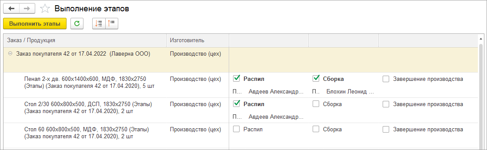
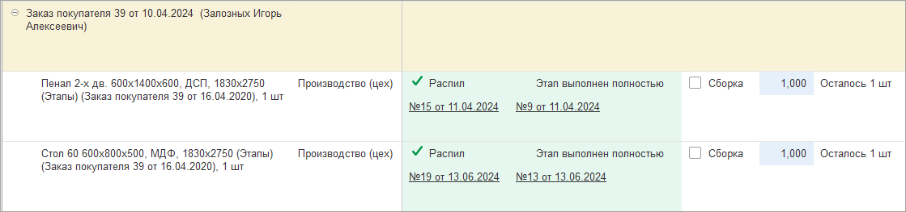

Автоматизированное рабочее место (АРМ) позволяет организовать массовое формирование производственных документов на основании заказов покупателей и заказов на производство. Продукция может производиться в несколько этапов разными датами%РазныеПодразделения%.
Для начала работы с АРМ требуется предварительная настройка программы:
После выполнения настроек необходимо сформировать заказы покупателя и/или заказы на производство, включающие производимую продукцию. В АРМ попадет только продукция с заполненной спецификацией из незакрытых заказов, проведенных после включения опции "Использовать производство в несколько этапов" настроек программы. При использовании многопередельного производства потребуется предварительное формирование заказов на производство для всех вложенных сборок (полуфабрикатов).
Рабочее место "Выполнение этапов производства" имеет два режима работы:
Простой – быстрое отражение этапа производства на все количество продукции.

Расширенный – гибкая настройка количества изделий на каждом этапе. Расширенный интерфейс позволяет в одном окне указывать сколько продукции на каком этапе требуется выпустить.
Цветовая индикация полей показывает полноту выполнения этапа. Зеленым выделяется этап, выполненный в полном объеме. Голубой фон имеют редактируемые поля с указанием количества продукции, которую мы планируем выпустить на данном этапе.

В правой панели можно указать дату формируемых документов, если она отличается от текущей. Есть возможность использования фильтров для отображения только части заказов или продукции. Далее нужно отметить все выполняемые этапы производства. В расширенном режиме также потребуется указать количество, для этапов, выполняемых не в полном объеме.
Может потребоваться ввод дополнительных данных.%Техоперации% В правой панели есть поля для массового заполнения исполнителя и изготовителя для всех отмеченных этапов. Также можно отметить выполненным определенный этап для всей отображаемой продукции.
По кнопке "Выполнить этапы" автоматически формируются документы производства и, при необходимости, сдельные наряды.
%Склады% - не изменяем
%Переход% - не изменяем
Узнать больше о работе в АРМ "Выполнение этапов производства"